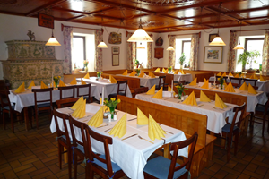
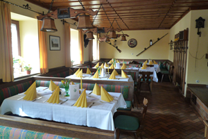
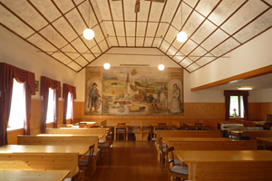

Räumlichkeiten

Gaststube
Unsere Gaststube bietet eine gemütliche Atmosphäre zum essen und zusammen sitzen.

Stüberl
In unserem "Stüberl" können Sie am Wochenende platznehmen. Außerdem bietet es den perfekten Rahemen für kleine Feierlichkeiten und Veranstaltungen.

Saal
Für größere Veranstaltungen, wie zum Beispiel Hochzeiten, steht Ihnen unser geräumiger Saal zur Verfügung.

Gastgarten
In den warmen Monaten können Sie in unserem Gastgarten im Innenhof Platz nehmen.